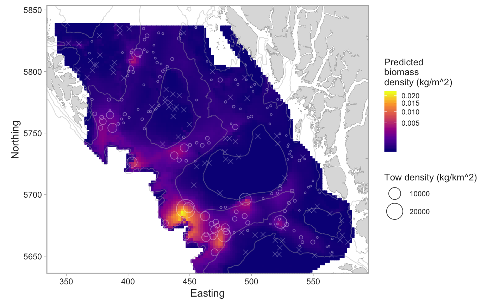

Implements geostatistical models of trawl or longline survey data. Uses INLA or glmmfields (currently disabled) for Bayesian inference.
fit_survey_sets(dat, years, survey = NULL, density_column = "density_kgpm2", chains = 4, iter = 1000, max_knots = 20, adapt_delta = 0.95, thin = 1, mcmc_posterior_samples = 150, required_obs_percent = 0.05, utm_zone = 9, model = c("inla", "glmmfields"), include_depth = TRUE, survey_boundary = NULL, premade_grid = NULL, inla_knots_pos = 75, inla_knots_bin = 100, ...)
| dat | Output from |
|---|---|
| years | The year to include in the model. Should be a single year. |
| survey | The survey abbreviation. Should match the contents of the
column |
| density_column | The name of the column that includes the relative
biomass density to use. E.g. |
| chains | The number of MCMC chains. Only applies to the glmmfields model. |
| iter | The number of MCMC chains. Only applies to the glmmfields model. |
| max_knots | The maximum number of knots to use in the predictive process approximation in the glmmfields model. If this number is larger than the number of data points then the number of knots is set to the number of data points minus 2. Only applies to the glmmfields model. |
| adapt_delta | Value to pass to |
| thin | Value to pass to |
| mcmc_posterior_samples | Number of final MCMC samples to return. Applies to both glmmfields and INLA. |
| required_obs_percent | A required fraction of positive sets before a model is fit. |
| utm_zone | The UTM zone to perform the modeling in. Defaults to zone 9. |
| model | The backend software to fit the model. Options are |
| include_depth | Logical: should depth be included as a predictor? If
|
| survey_boundary | If not |
| premade_grid | If not |
| inla_knots_pos | The number of knots for the positive component model if fit with INLA. |
| inla_knots_bin | The number of knots for the binary component model if fit with INLA. |
| ... | Any other arguments to pass on to |
set.seed(123) # pop_surv <- get_survey_sets("pacific ocean perch") # or use built-in data: fit <- fit_survey_sets(pop_surv, years = 2015, survey = "SYN QCS")#>#>#>names(fit)#> [1] "predictions" "data" "models" "survey" "years"